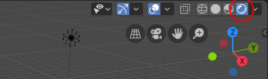
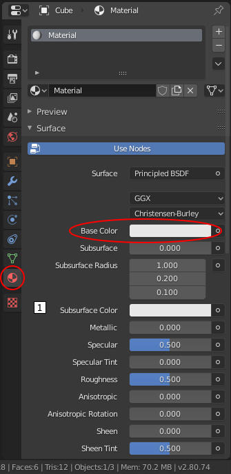

Lektion 1 - Intro
Inhalt
- Blender UI
- Primitive und Transformationen
- Hierarchien
- Keyframe Animation
- Farbe und Beleuchtungsberechnung
1. Blender UI
Um mit Blender arbeiten zu können, muss ein grundsätzliches Verständnis über User-Interface bestehen. Eine gute Einleitung gibt es z.B. im Guide to Blender 2.8 - Part 1: The Interface
Die wohl bekannteste Tutorialreihe zu Blender 2.8+ von Andrew Price: Blender 2.8 Beginner Tutorial Series.
In den folgenden Tutorials werden immer wieder Teile des Blender-User-Interface im Text benannt. Hier eine Übersicht über die Namen.
Blender Screen Layout

Blender ist in einzelne Editor genannte Bereiche eingeteilt. In o.a. Bild sieht man die Editoren farblich markiert. Jeder Editor besitzt einen Header. Der Typ des Editor kann immer am kleinen Icon neben den Editor-Namen in o.a. Bild erkannt (und auch umgestellt) werden. Einige Editoren haben ihren Header am oberen Rand, andere am unteren Rand. Der Info Editor besteht NUR aus Header.
Einige Editoren, wie z.B. der 3D Viewport erlauben das Einblenden von Panels bzw. Bars
mit Hilfe der Tasten T - Toolbar und N - Sidebar. Die Panels sind immer
Bestandteil des jeweiligen Editor.
Folgende Sachverhalte sollen verstanden worden sein.
- Rechte Maustaste vs. Linke Maustaste
- Aufteilung des Blender-Fensters in Editoren. Wie verändere ich die Aufteilung
- Wechseln eines Editor
- 3D Viewport
- Funktionsweise der Numpad-Tasten
0…9zur Navigation im 3D-Fenster
2. Primitive und Transformationen
Blender liefert eine Reihe von bereits vordefinierten einfachen 3D Modellen. Menü: Add->Mesh oder Shift+A->Mesh.
Zusätzliche Objekt-Typen, wie z.B. der Utah-Teapot stehen über das
bereits mit Blender installierte Add-on “Extra Objects” zur Verfügung. Zum Aktivieren dieses Add-Ons muss in den
Preferences (Menu Bar: Edit -> File -> Preferences… oder Tastatur F4 Window Context Menu -> P) im Tab Add-ons in der Category
Add Mesh das Add-on “Add Mesh: Extra Objects” mit einem Häkchen versehen.

Folgende Fertigkeiten sollten vorhanden sein.
- Einfügen von neuen Objekten, löschen von bestehenden Objekten
- Verändern der Objekt-Eigenschaften beim Einfügen im Tool Shelf
- Verändern der Standard-Eigenschaften Position, Rotation und Skalierung mit dem 3D Manipulator Widget, mit
den Tastaturbefehlen
Grab (=Positionieren),Rotate undScale, sowie numerisch über die Location, Rotation und Scale-Werte im Properties Shelf. - Rotationszentrum verändern mit
3D-Editor->Object->Transform->Origin to xxxoder exakt über den 3D Cursor wie in der Antwort zu dieser Frage beschrieben.
3. Hierarchien (Outliner)
In jeder 3D-Software gibt es die Möglichkeit, dass Objekte eine Liste von Kind-Objekten enthalten können. Hierüber lassen sich Hierarchien von Objekten aufbauen. Der Vorteil hierbei ist, dass Eltern-Objekte bestimmte Eigenschaften an ihre Kinder “vererben” können. Die häufigsten Eigenschaften hier sind
- Farbe/Material: Besitzt ein Kind-Objekt keine eigene Material-Definition, erbt es das Material des Eltern-Objektes
- Transformationen (Position/Rotation/Größe) - Änderungen an diesen Eigenschaften werden auf das Kindobjekt übertragen
Bei der Vererbung von Position/Rotation/Größe können Kindobjekte zusätzlich zu denen der Eltern noch eigene Transformationen besitzen, die dann relativ zu den bereits durch die Eltern-Objekte vorgegebenen Transformationen angewendet werden. Ein gutes Anwendungsbeispiel für eine solche Kette von Eltern-Kind-Objekten ist ein Roboterarm

Um Objekt E zum Elternobjekt von Objekt K zu machen:
- Objekt K selektieren.
- Mit gedrückter
Shift-Taste Objekt E selektieren. Ergebnis: Beide Objekte erscheinen mit dem orangenen Auswahl-Rand. Der Rand von Objekt K ist dunkler Ctrl+Poder Object -> Parent -> Object im Menü auswählen oder im Tools-PanelTim Reiter Relations den Parent: Set Button drücken.
4. Keyframe Animation
Werte und Parameter lassen sich aninmieren. Hierzu werden Keyframes gesetzt, mit denen der Benutzer Werte zu einem bestimmten Zeitpunkt (Frame) festlegen kann. Die Zwischenwerte werden automatisch interpoliert. Durch Verschieben des Time Cursors (blau) kann zu einem bestimmten Zeitpunkt gesprungen bzw. die Animation punktuell angehalten werden.

Animation erstellen
- Zeitpunkt wählen
Den blauen Time Cursor mit KlickLMBzum gewünschten Frame springen oder mit Ziehen und Ablegen veschieben. - Parameter wählen
MitRMBauf das Eingabefeld (Object Context) des zu ändernden Wertes klicken (z.B. Location X für die X-Position eines Objektes) - Keyframe setzen
Im Kontext-Menü ‘Insert Keyframes’ oder ‘Insert Single Keyframe’ auswählen, direkt Shortcutioder durch Klick auf das Diamantsymbol daneben, um einen Key setzen.Animierte Parameter sind farbig hinterlegt. Das Eingabefeld ist khaki , wenn es sich um einen Keyframe handelt. Ebenso sehen wir in der Timeline ein orange-gelbes Diamantsymbol. In-Between Frames, also interpolierte Zwischenwerte erkennen wir am Grün
5. Farbe und Beleuchtungsberechnung
Farbe in der 3D-Modellierung ist immer das Ergebnis einer Farbberechnung pro Pixel, in die u.A. folgende Parameter einfließen:
- Materialeigenschaften des Objektes
- Grundfarbe
- Spiegeleigenschaft / Lichtdurchlässigkeit
- Struktur der Oberfläche
- Ausrichtung der Fläche im Raum
- Position und Rotation der Lichtquellen im Raum
- Position und Rotation der Kamera im Raum
Beleuchtungsberechnung
Das Thema wird noch intensiv in späteren Lektionen behandelt. Hier soll nur ein kurzer Leitfaden gegeben werden, wie einzelnen Objekten Farben zugewiesen werden können. Mit den hier gezeigten sehr einfachen Beleuchtungsberechnung werden zwei wichtige Phänomene des menschlichen Sehens nachgestellt:
Diffuse Light - beschreibt das Phänomen, dass, je stärker ein Bereich einer Oberfläche in Richtung des Lichtes ausgerichtet ist (je stärker die Fläche ins Licht “schaut”), desto heller die Oberfläche an dieser Stelle erscheint (und umgekehrt). aDiese Phänomen ist -neben der Grundfarbe- von Lichtposition und Rotation und der Ausrichtung der Fläche im Raum abhängig. Durch dieses Phänomen erscheinen Objekte dreidimensional und nicht als bloße Umrisse, die im Innern überall die selbe (Grund-)Farbe haben: Eine Kugel bekommt einen Farbverlauf von der Mitte zum Rand, die unterschiedlichen Seiten eines Würfels erscheinen in unterschiedlichen Helligkeiten.
Specular Light - simuliert Glanzpunke auf der Oberfläche. Diese sind eigentlich Spiegelbilder der Lichtquellen. Je nach Materialeigenschaft werden sie scharf und punktförmig oder unscharf und flächig abgebildet. Hier hängt es -zusätzlich zu den Parametern des Diffuse Light- auch noch von der Position und Blickrichtung des Betrachters (der Kamera) ab, wie stark eine Stelle auf der Oberfläche abgebildet wird.
Material
Um die Grundfarbe des Standardmaterials (= Principled BSDF) zu ändern und diese auf dem Objekt darzustellen
- zunächst im Overlay des 3D Viewports rechts-oben das Viewport Shading auf ‘Rendered’ (Display render preview) oder ‘Look Dev’ umschalten.
 - Das Objekt (Default Box) selektieren
- Im Properties Editor den Tab ‘Material’ (Material Context) auswählen und ggfs. mit ‘New’ ein neues Material erzeugen. 
- Im Channel ‘Base Color’ öffnet sich mit einem
LMBauf das Farbfeld der Color Picker über den eine neue Farbe gewähkt werden kann.
Licht
Ein neues .blend File enthält bereits ein Licht (die in Blender Lamp heißen). Um seinen Einfluß zu sehen,
muss, wie oben beim Material beschrieben, im ‘Viewport Shading’ die Einstellung ‘Material’ gewählt sein.
Dann könn durch bewegen des Lamp Objektes (z.B. mit G) und der Kamera die oben beschriebenen simulierten
Beleuchtungsphänomene beobarchtet werden.
Neue Lichter können mit Add (Shift+A) -> Lamp eingefügt werden. Es gibt eine Reihe unterschiedlicher Typen.
Hier kurz die wichtigsten.
Point - simuliert eine Punktlichtquelle, die ausgehend von ihrer Position im Raum radial in alle Richtungen Licht aussendet. Die Veränderung der Rotation eines Point Light bewirkt keine Veränderung.
Sun - wird in anderen 3D-Umgebungen oft auch Parallel Light genannt. Simuliert eine Lichtquelle, die in parallele Lichtstralen in eine vorgegebene Richtung wirft. Damit lassen sich sehr weit oder unendlich weit entfernte Lichtquellen, wie z.B. das Sonnenlicht simulieren. Die Rotation eines Sun Light bestimmt die Richtung der Lichtstrahlen, während Änderungen an der Position eines Sun Light keine Wirkung zeigt.
Spot - simuliert Punktlichtquelle, bei denen die Lichtstrahlen durch einen Kegel eingeschränkt werden. Änderungen an der Position und an der Rotation bewirken Veränderungen. Der Öffnungswinkel des Lichtkegels und auch die Randschärfe des oberflächen erzeugten Lichtflecks kann im Properties-Editor in den Object-Data Einstellungen des Spot Light geändert werden.